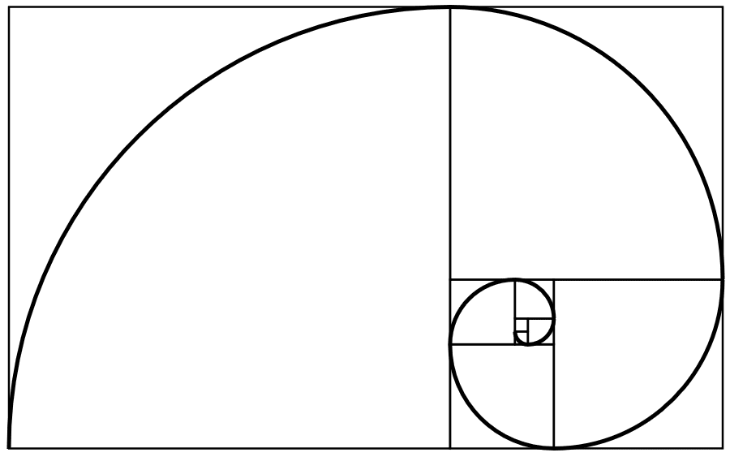
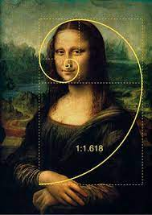

Le nombre d'or, noté par la lettre φ (phi) de l'alphabet grec, est un nombre irrationnel, qui est égal à (1+√5)/2, soit environ 1,618. Ce nombre est l'unique solution de l'équation x²=x+1. Considéré comme le nombre correspondant aux proportions parfaites, il est surnommé la "divine proportion". Il est à l'origine de nombreuses constructions géométriques, comme les triangles d'or et d'argent ou le rectangle d'or ci-dessous, qui permet de construire la spirale d'or.
Le nombre d'or est lié à la suite de Fibonacci. Cette suite est une suite d'entiers dans laquelle chaque terme est la somme des deux précédents (1, 1, 2, 3, 5, 8...). Le quotient de deux nombres consécutifs de cette suite permet d'obtenir une approximation de φ (Exemple: 21/13=1,615)
On le retrouve quasiment partout dans la nature : dans les spirales au coeur des tournesols, sur les pommes de pin ou même dans les phalanges humaines ! Il a été souvent utilisé dans l'architecture mais aussi dans la peinture (par exemple, L'Homme de Vitruve, ou La Joconde).
